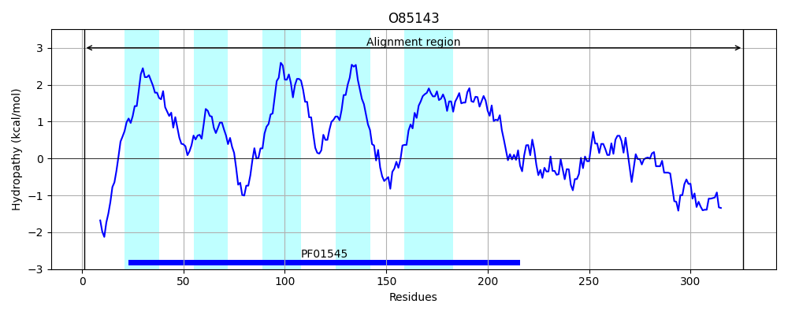

Hit Accession: O85143
Hit TCID: 2.A.4.1.2
Hit Description: gnl|BL_ORD_ID|7670 gnl|TC-DB|O85143|2.A.4.1.2 TRANSPORT PROTEIN - Staphylococcus aureus.
Mach Len: 326
e:0.000000
Query TMS Count : 5
Hit TMS Count: 5
TMS-Overlap Score: 4.600000
Predicted Substrates:CHEBI:23337;cobalt(2+), CHEBI:10113;zinc(2+)
BLAST Alignment:
Score: 1657 , Bit scores: 642 bits, E-value: 0.0e+00, Alignment length: 326, Percentage identity: 98
Query: 1 MSHSHHHHDHMHSHVTTNNKKVLFISFLIIGLYMFIEIIGGLLANSLALLSDGIHMFSDTFSLGVALVAFIYAEKNATTTKTFGYKRFEVLAALFNGVTLFVISILIVFEAIKRFFVPSEVQSKEMLIISIIGLIVNIVVAFFMFKGGDTSHNLNMRGAFLHVIGDLLGSVGAITAAILIWAFGWTIADPIASILVSVIILKSAWGITKSSINILMEGTPSDVDIDEVITTIKKDSRIQSVHDCHVWTISNDMNALSCHVVVDHTLTMKECELLLENIEHDLLHLNIHHMTIQLETPNHKHDESIICSGTHSHSHNHHAHHHAHVH 326
MSHSHHHHDHMHSHVTTNNK+VLFISFLIIGLYMFIEIIGGLLANSLALL DGIHM SDTFSLGVALVAFIYAEKNATTTKTFGYKRFEVLAALFNGVTLFVISILIVFEAI RFFVPSEVQSKEMLIISIIGLIVNIVVAFF FKGGDTSHNLNMRGAFLHVIGDLLGSVGAITAAILIWAFGWTIADPIASILVSVIILKSAWGITKSSINILMEGTPSDVDIDEVITTI KDSRIQSVHDCHVWTISNDMNALSCHVVVDHTLTMKECELLLENIEHDLLHLNIHHM+IQLETPNHKHDESIICSGTHSHSHNHHAHHHAHVH
Sbjct: 1 MSHSHHHHDHMHSHVTTNNKEVLFISFLIIGLYMFIEIIGGLLANSLALLRDGIHMSSDTFSLGVALVAFIYAEKNATTTKTFGYKRFEVLAALFNGVTLFVISILIVFEAITRFFVPSEVQSKEMLIISIIGLIVNIVVAFFRFKGGDTSHNLNMRGAFLHVIGDLLGSVGAITAAILIWAFGWTIADPIASILVSVIILKSAWGITKSSINILMEGTPSDVDIDEVITTITKDSRIQSVHDCHVWTISNDMNALSCHVVVDHTLTMKECELLLENIEHDLLHLNIHHMSIQLETPNHKHDESIICSGTHSHSHNHHAHHHAHVH 326 | Protein Hydropathy Plots: |
|---|
|  |
Pairwise Alignment-Hydropathy Plot:
|
|---|
|